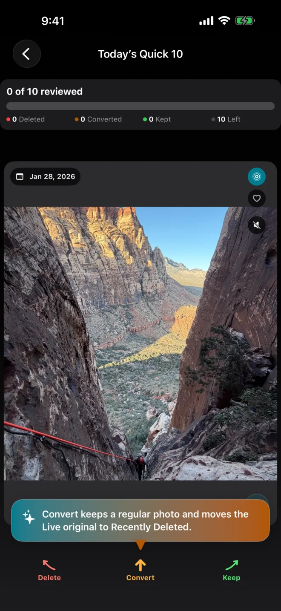

Keep the photo.
Free up space.
Turn selected Live Photos into stills to reclaim storage. Keep the moments that need motion.
For iPhone · iOS 17 or later

Scan, review, and start converting.
Unlimited cleaning for life. No subscription. See the App Store for your local price.
No account, ads, or photo uploads.
How it works
A Live Photo contains a still image and a short video. Remove motion and sound you no longer need.
Scan your library
See estimated recoverable storage before making changes.
Choose your photos
Swipe through Today’s Quick 10, a date, or an album. Filter and select multiple photos in Bulk Mode. Keep, convert, or delete each photo.
Review and confirm
Check every choice before Photos changes. Conversion creates still replacements, then moves Live originals to Recently Deleted.
Originals use storage until they leave Recently Deleted. Check your stills before permanently deleting the originals in Photos, or let them expire.
Before you convert
- Photo format and informationHEIF and supported photo information are preserved where possible. Some metadata, editing history, or Live Photo effects may differ.
- iCloud and storage estimatesThe app processes photos on your iPhone; iCloud Photos still handles downloads and syncing. Actual savings vary, especially with Optimize iPhone Storage.